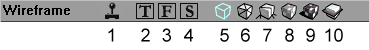

Making Liquids (UT)
This tutorial covers UT. See Making Liquids for the modern version.
Introduction
Making water, lava or slime couldn't be easier. It's like falling of your bike your very first time. Yep that easy. By the time you're done with this tutorial, you should be able to use sheets and actors to create a body of water within your level. For the sake of simplity I shall refer to making water in this tutorial though the process is the same as setting up anything else like lava or slime. I'm also assuming you know the basics of addition, subtraction and know your way around UnrealEd enough to know where buttons are etc. If you don't, some pages that may help are:
- UnrealEd interface and in particular the toolbox
- Subtraction And Addition
- Actor Overview
Instructions
- In order to build water we must have a place to hold the water. Subtract a space in your map: 512x1024x1024. Then subtract from the floor a cube of about 256x256x256. You should now have something that looks like a room with an empty swimming pool.
- Open the texture browser and pick a nice water texture from GenFluids.utx or anyother pack that you might prefer to use. (See Texture Package (UT) for a complete list.)
- Now we need a sheet brush for the water surface. Make a sheet 256 x 256. (Some tutorials tell you the sheet must be slightly bigger than the size of the pool. This is incorrect. It must line up exactly, and if you are using the grid, this is easily done. On the other hand, if you make the sheet slightly bigger it's easier to select it in the Top orthogonal viewport. If the water surface is a complex shape (eg you have pillars or rocks or something) then it's easiest to overlap the sheet with solid space.)
- click on the add special brush button. Scroll down the prefabs to water and click OK. You should see a green sheet now. Move the sheet to the top of the pool and set it in place so it's a little bit lower than the top edge.
Example: we have a pool that is 256 units deep. Set the sheet at 240, or lower if you want. You can also set it flush at 256 mark if you'd like. - What we've done so far is create a zone which we will tell UnrealEd to treat as water. Add an Actor >> Info >> ZoneInfo >> WaterZone. (Or LavaZone, or SlimeZone depending on what you want to create.) Make sure is it near the bottom so there is no chance of a leak.
- Rebuild and go play your level. You have lava, water, slime whatever you wanted.
In more depth
The leaks basically refered to your zone not being built properly. Switch the 3D viewport to Zone/Portal view by clicking the icon in the viewport titlebar (#10 in the picture below).
All the geometry will now be displayed in shades of one colour. If you go below the sheet that acts as the surface of the water, the zone portal, the color will be different.

|
This means there are two zones separated by that sheet. This sheet is essentially telling UnrealEd that everything below this sheet will have different properties (in our case water) and everything above will be something else. For the sake of having fun delete the sheet and rebuild. Play your level and tell me if there is a difference 
Related Topics
- Zoning
- Architecture topic page
Comments
Tarquin: This page is going to become Making water (UT)